到目前为止，我们大多只在单个范畴或一对范畴中工作。有时这种做法约束得有点过头。
例如，在范畴 C 中定义极限时，我们引入索引范畴 I，把它作为构成锥底图案的模板。照理还可以引入另一个平凡范畴，作为锥顶的模板；但当时用了从 I 到 C 的常函子 Δc。
现在来修正这种别扭。用三个范畴定义极限。先从索引范畴 I 到 C 的函子 D 开始；这个函子选择锥底，也就是图函子（diagram functor）。
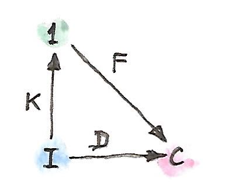
新加入的是只包含一个对象（和一个恒等态射）的范畴 1。从 I 到这个范畴只可能有一个函子 K：它把所有对象映射到 1 中唯一的对象，把所有态射映射到恒等态射。任意从 1 到 C 的函子 F 都会为锥选出一个候选锥顶。
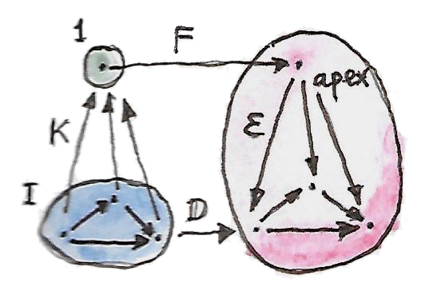
锥是从 F∘K 到 D 的自然变换 ε。注意，F∘K 所做的事情与原来的 Δc 完全相同。下图展示了这个变换。
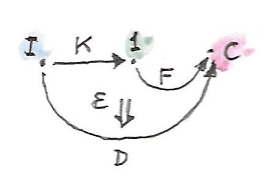
现在可以定义泛性质，选出这类函子中“最好”的 F。这个 F 会把 1 映射到 C 中 D 的极限对象，而从 F∘K 到 D 的自然变换 ε 会提供相应投影。这个泛函子称为 D 沿 K 的右 Kan 扩张（right Kan extension），记作 RanKD。
来表述它的泛性质。假设有另一个锥——也就是另一个函子 F′，以及从 F′∘K 到 D 的自然变换 ε′。
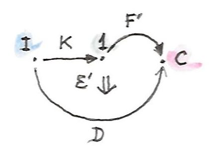
如果 Kan 扩张 F=RanKD 存在，就必须有唯一自然变换 σ:F′→F，使 ε′ 通过 ε 分解：
这里，σ∘K 是两个自然变换的水平复合（其中一个是 K 上的恒等自然变换），随后再与 ε 垂直复合。
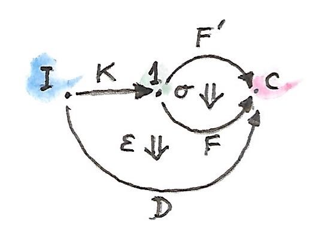
写成在 I 中对象 i 处的分量，得到：
在当前例子中，σ 只有一个分量，对应范畴 1 中唯一的对象。因此，这确实是从 F′ 定义的锥顶到 RanKD 定义的泛锥锥顶的唯一态射。交换条件也恰好就是极限定义所要求的条件。
但重要的是，可以自由地用任意范畴 A 替换平凡范畴 1，而右 Kan 扩张的定义依然有效。
右 Kan 扩张
函子 D:I→C 沿函子 K:I→A 的右 Kan 扩张，是函子 F:A→C（记为 RanKD）与自然变换：
它满足：对任意其他函子 F′:A→C 以及自然变换：
都存在唯一自然变换：
使 ε′ 分解为：
这一长串话可以用下面这张漂亮的图表示：
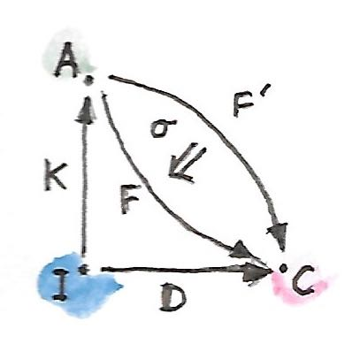
一个有趣的视角是：从某种意义上看，Kan 扩张像“函子乘法”的逆。一些作者甚至用 D/K 表示 RanKD。这样一来，ε 的定义——它也称为右 Kan 扩张的余单位（counit）——看起来就像简单约分：
Kan 扩张还有另一种解释。把函子 K 看成把范畴 I 嵌入 A；最简单时，I 可以就是 A 的子范畴。已有函子 D 把 I 映射到 C。能否把 D 扩展为定义在整个 A 上的函子 F？理想情况下，这样的扩展会使 F∘K 与 D 同构。换句话说，F 把 D 的定义域扩展到了 A。但要求完整同构通常太强，只取其一半也够了，即从 F∘K 到 D 的单向自然变换 ε。（左 Kan 扩张选择另一个方向。）
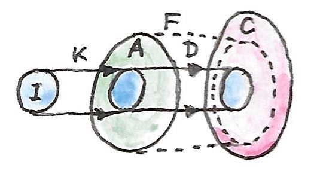
当然，如果 K 在对象上不是单射，或者在 Hom 集上不忠实——极限的例子就是如此——这种嵌入图景便会失效。这时 Kan 扩张会尽其所能外推已经丢失的信息。
作为伴随的 Kan 扩张
现在假设对任意 D（以及固定的 K），右 Kan 扩张都存在。这时 RanK-（短横线替代 D）是从函子范畴 [I,C] 到函子范畴 [A,C] 的函子。事实证明，它是预复合函子 -∘K 的右伴随。后者把 [A,C] 中的函子映射到 [I,C] 中。伴随为：
这只是重述了：每个称为 ε′ 的自然变换，都对应唯一一个称为 σ 的自然变换。
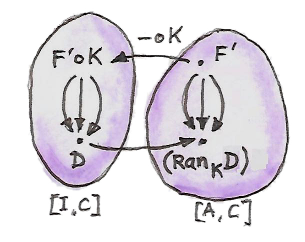
进一步，如果选择 I 与 C 相同，可以用恒等函子 IC 替代 D，得到：
现在选择 F′=RanKIC。右侧包含恒等自然变换，与之对应，左侧给出自然变换：
这很像伴随的余单位：
确实，恒等函子沿 K 的右 Kan 扩张可以用来计算 K 的左伴随。为此还需要一个条件：右 Kan 扩张必须被函子 K 保持。保持扩张意味着：先把函子与 K 预复合再计算 Kan 扩张，应该得到与先算原 Kan 扩张再与 K 预复合相同的结果。在这里，这个条件简化为：
采用“除以 K”的记法，伴随可写成：
这印证了我们的直觉：伴随描述某种逆。保持条件变成：
函子沿自身的右 Kan 扩张 K/K 称为余稠密 Monad（codensity monad）。
这个伴随公式是重要结果，因为很快会看到，可以用 End（Coend）计算 Kan 扩张，从而得到一种实际寻找右伴随（和左伴随）的方法。
左 Kan 扩张
对偶构造给出左 Kan 扩张（left Kan extension）。为建立直觉，从余极限的定义开始，把它改写成使用单对象范畴 1 的形式。用函子 D:I→C 形成余锥底，再用函子 F:1→C 选择余锥顶。
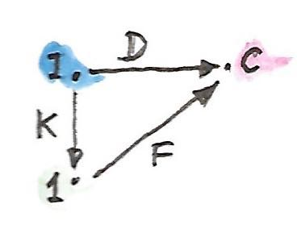
余锥的边——注入——是从 D 到 F∘K 的自然变换 η 的分量。
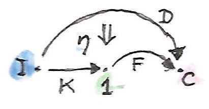
余极限是泛余锥。因此，对任意其他函子 F′ 与自然变换：
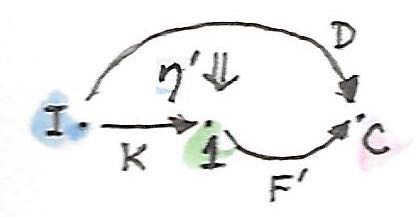
都存在从 F 到 F′ 的唯一自然变换 σ：
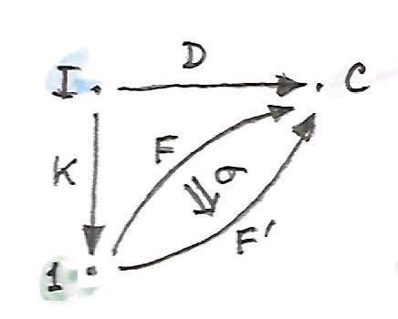
使得：
如下图所示：
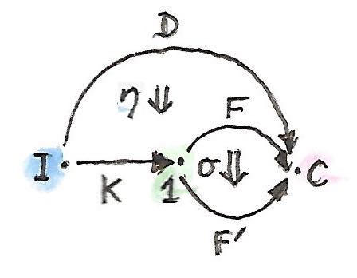
用 A 替换单对象范畴 1，这一定义自然推广为左 Kan 扩张，记作 LanKD。
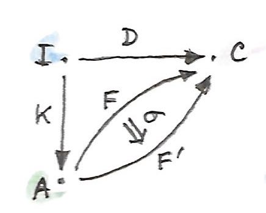
自然变换：
称为左 Kan 扩张的单位（unit）。
和之前一样，可以把自然变换之间的一一对应：
改写成伴随：
换言之，左 Kan 扩张是沿 K 预复合的左伴随，右 Kan 扩张是其右伴随。
正如恒等函子的右 Kan 扩张可用于计算 K 的左伴随，恒等函子的左 Kan 扩张会给出 K 的右伴随（η 是伴随单位）：
合并两个结果，得到：
作为 End 的 Kan 扩张
Kan 扩张真正的力量来自它们可以用 End（和 Coend）计算。为简单起见，只考虑目标范畴 C=Set 的情况，不过公式可以推广到任意范畴。
重新审视 Kan 扩张可以把函子的作用延伸到原定义域之外这一想法。假设 K 把 I 嵌入 A，函子 D 把 I 映射到 Set。可以直接说：对 K 的像中任意对象 a=Ki，扩展后的函子把 a 映射到 Di。问题在于，A 中那些位于 K 的像之外的对象怎么办？思想是：每个这样的对象都可能通过许多态射连接到 K 的像中每个对象，而函子必须保持这些态射。从对象 a 到 K 的像的全部态射由 Hom 函子刻画：
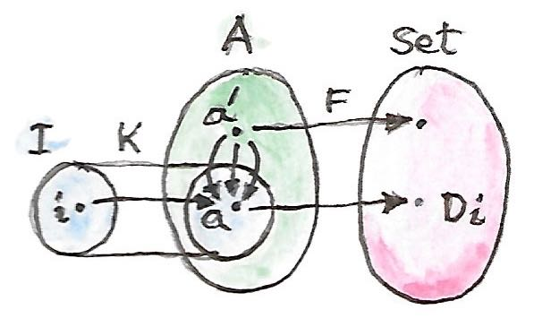
注意，这个 Hom 函子是两个函子的复合：
右 Kan 扩张是函子复合的右伴随：
把 F′ 换成 Hom 函子：
再内联复合：
右侧可用 Yoneda 引理化简：
现在把自然变换集合重写成 End，得到非常方便的右 Kan 扩张公式：
左 Kan 扩张有一个对应的 Coend 公式：
为说明情况确实如此，要证明它确实是函子复合的左伴随：
把公式代入左侧：
这是一个自然变换集合，所以可改写成 End：
利用 Hom 函子的连续性，可把 Coend 换成 End：
使用乘积—指数伴随：
指数同构于相应 Hom 集：
Fubini 定理允许交换两个 End：
内部 End 表示两个函子之间的自然变换集合，所以可以使用 Yoneda 引理：
这确实是起初要证明的伴随等式右侧所形成的自然变换集合：
这种使用 End、Coend 与 Yoneda 引理的计算，是 End“微积分”的典型操作。
Haskell 中的 Kan 扩张
Kan 扩张的 End/Coend 公式很容易翻译成 Haskell。先看右扩张：
把 End 换成全称量词，把 Hom 集换成函数类型：
newtype Ran k d a = Ran (forall i. (a -> k i) -> d i)看这个定义，很明显 Ran 必须包含一个 a 类型的值，以便把函数应用到它上面；还必须包含函子 k 与 d 之间的自然变换。例如，假设 k 是树函子，d 是列表函子，而你拿到一个 Ran Tree [] String。如果传给它一个函数：
f :: String -> Tree Int就会得到一个 Int 列表，以此类推。右 Kan 扩张会用你的函数生成一棵树，再把它重新包装成列表。例如，可以传给它一个从字符串生成解析树的解析器，得到对应于这棵树深度优先遍历的列表。
把函子 d 换成恒等函子，可以用右 Kan 扩张计算给定函子的左伴随。这使函子 k 的左伴随表示为下面类型的多态函数集合：
forall i. (a -> k i) -> i假设 k 是从幺半群范畴出发的遗忘函子，那么全称量词会遍历所有幺半群。当然，Haskell 无法表达幺半群定律，但下面是所得自由函子的一个不错近似（遗忘函子 k 对对象是恒等映射）：
type Lst a = forall i. Monoid i => (a -> i) -> i正如预期，它生成自由幺半群，也就是 Haskell 列表：
toLst :: [a] -> Lst a
toLst as = \f -> foldMap f as
fromLst :: Lst a -> [a]
fromLst f = f (\a -> [a])左 Kan 扩张是 Coend：
所以它翻译为存在量词。符号化地写：
Lan k d a = exists i. (k i -> a, d i)可以使用 GADT，或者带全称量化的数据构造器，在 Haskell 中编码：
data Lan k d a = forall i. Lan (k i -> a) (d i)这个数据结构的解释是：它包含一个函数，该函数接受某种未知的 i 的容器并产生 a；它还包含一个装着那些 i 的容器。因为你不知道 i 是什么，对这个数据结构唯一能做的事是：取出 i 的容器，用一个自然变换把它重新包装进函子 k 定义的容器，再调用函数得到 a。例如，如果 d 是树，k 是列表，可以把树序列化，调用接受所得列表的函数，并得到一个 a。
左 Kan 扩张可以用来计算函子的右伴随。已知积函子的右伴随是指数，所以尝试用 Kan 扩张实现：
type Exp a b = Lan ((,) a) Identity b它确实与函数类型同构，下面一对函数就是证明：
toExp :: (a -> b) -> Exp a b
toExp f = Lan (f . fst) (Identity ())
fromExp :: Exp a b -> (a -> b)
fromExp (Lan f (Identity x)) = \a -> f (a, x)注意，正如先前在一般情形中描述的那样，我们完成了以下步骤：
- 取出
x的容器（这里它只是平凡的恒等容器）与函数f； - 使用恒等函子与二元组函子之间的自然变换重新包装容器；
- 调用函数
f。
自由函子
Kan 扩张的一个有趣应用是构造自由函子。它解决下面这个实际问题：假设有一个类型构造器——也就是对象映射。能否基于它定义函子？换句话说，能否定义态射映射，把这个类型构造器扩展成完整的自函子？
关键观察是：类型构造器可以描述为一个定义域为离散范畴的函子。离散范畴除恒等态射外没有其他态射。给定范畴 C，总能简单地丢弃所有非恒等态射，构造离散范畴 |C|。于是从 |C| 到 C 的函子 F 只是对象映射，也就是 Haskell 中所谓的类型构造器。还有一个把 |C| 注入 C 的典范函子 J：它对对象（以及恒等态射）是恒等映射。若 F 沿 J 的左 Kan 扩张存在，它就是从 C 到 C 的函子：
它称为基于 F 的自由函子（free functor）。
在 Haskell 中写作：
data FreeF f a = forall i. FMap (i -> a) (f i)确实，对任意类型构造器 f，FreeF f 都是函子：
instance Functor (FreeF f) where
fmap g (FMap h fi) = FMap (g . h) fi可以看到，自由函子通过记录函数及其参数来模拟函数提升；它通过记录提升函数的复合来累积这些函数。函子定律会自动满足。论文 Freer Monads, More Extensible Effects 使用了这一构造。
也可以用右 Kan 扩张达到同一目的：
newtype FreeF f a = FreeF (forall i. (a -> i) -> f i)很容易验证这确实是函子：
instance Functor (FreeF f) where
fmap g (FreeF r) = FreeF (\bi -> r (bi . g))